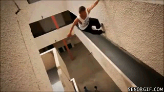
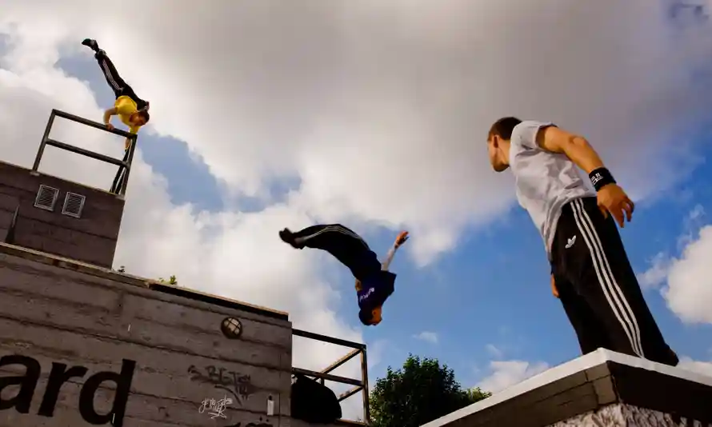
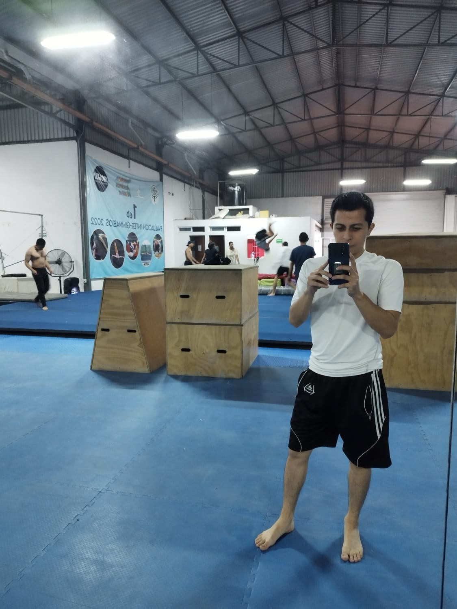

Introducción al Parkour

El parkour es una disciplina física y mental que se originó en Francia a fines del siglo XX. Su objetivo principal es moverse de manera eficiente y fluida a través del entorno urbano o natural, superando obstáculos de manera creativa y rápida. Los practicantes de parkour, conocidos como traceurs (en masculino) o traceuses (en femenino), utilizan su cuerpo de diversas formas para saltar, trepar, correr, rodar y sortear obstáculos de manera elegante y eficiente.
Fecha: 11/10/23
Autor: Víctor Daniel Guzmán Mondragón
¿Por qué entrenarlo?

Entrenar parkour ofrece una serie de beneficios físicos, mentales y emocionales que lo convierten en una disciplina atractiva para muchas personas.
Desarrollo Físico: El parkour es una forma efectiva de mejorar la fuerza, la agilidad, la flexibilidad y la resistencia. Los practicantes desarrollan una mayor conciencia corporal y control sobre su movimiento.
Superación de Obstáculos: El parkour se centra en superar obstáculos de manera creativa y eficiente. Los practicantes aprenden a afrontar desafíos físicos y mentales, lo que puede traducirse en una mayor confianza en la vida cotidiana.
Movimiento Libre: Promueve la libertad de movimiento y la expresión personal. No requiere un equipo costoso ni un entorno específico, por lo que puedes practicarlo en cualquier lugar.
Mente y Concentración: Requiere un alto nivel de concentración y toma de decisiones rápidas. Esto fomenta la mente y la concentración, lo que puede ser beneficioso en situaciones cotidianas.
Creatividad: Los practicantes de parkour desarrollan su creatividad al encontrar formas únicas de superar obstáculos y desarrollar nuevas técnicas de movimiento.
Comunidad: El parkour a menudo se practica en grupos y comunidades. Esto brinda la oportunidad de hacer amigos, compartir conocimientos y aprender de otros practicantes.
Adaptabilidad: Fomenta la adaptabilidad y la capacidad de afrontar situaciones inesperadas, lo que puede ser útil en la vida diaria.
Estilo de Vida Activo: Promueve un estilo de vida activo y saludable, lo que puede mejorar la salud cardiovascular y ayudar a mantener un peso saludable.
Diversión: Para muchas personas, el parkour es simplemente divertido. Saltar, correr y superar obstáculos puede ser emocionante y gratificante.
Fecha: 11/10/23
Autor: Víctor Daniel Guzmán Mondragón
Progreso
Progreso Inicial

Inicialmente se empieza entrenando con más personas del ambiente para acoplarse fisica y mentalmente al ejercicio nuevo
En este caso iniciamos en un gimnasio referente al ejercicio que haremos en un futuro
De esta manera y con gran esfuerzo lograremos grandes avances
Progreso de 3 Meses
Como se puede observar en los videos anteriores, después de un arduo entrenamiento empezamos con la practica de piruetas
Estás llevan bastante concentración y fuerza para su implementación pero mientras se haga un entrenamiento constante se mejorara la tecnica
Progreso Actual
Actualmente se puede apreciar la mejoria en tecnica y fuerza al intentar los "tricks" como usualmente llamamos en este deporte
Gracias a un gran entrenamiento y constancia se pueden apreciar los frutos después de un largo camino
Pero el progreso no se detiene y esperamos mejorar aún más (;